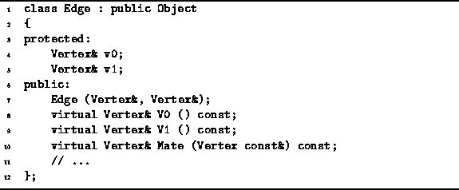
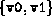
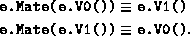

Data Structures and Algorithms
with Object-Oriented Design Patterns in C++
Data Structures and Algorithms
with Object-Oriented Design Patterns in C++An edge in a directed graph is an ordered pair of vertices; an edge in an undirected graph is a set of two vertices. Because of the similarity of these concepts, we use the same class for both--the context in which an edge is used determines whether it is directed or undirected.
Program  declares the concrete class Edge.
Since we intend to insert instances of this class into containers,
the Edge class is derived from the Object base class.
declares the concrete class Edge.
Since we intend to insert instances of this class into containers,
the Edge class is derived from the Object base class.

Program: Edge Class Definition
The Edge class contains two member variables--v0 and v1. Each is a reference to a vertex. When an instance of this class is used to represent a directed edge, then the edge represented shall be . I.e., v1 is the head and v0 is the tail. Alternatively, when an Edge instance represents an undirected edge, that edge is simply .
Program declares a constructor which takes two arguments,
both of them references to Vertex instances.
The effect of this constructor is to initialize the two
corresponding member variables accordingly.
In addition to the constructor, there are three public member functions: V0, V1 and Mate. All three of them are accessors. The first are used to access the member variables v0 and v1, respectively.
For every instance e of the Edge class, the Mate member function satisfies the following identities:

Therefore, if we know that a vertex v is one of the vertices of e, then we can find the other vertex by calling e.Mate(v).
 Copyright © 1997 by Bruno R. Preiss, P.Eng. All rights reserved.
Copyright © 1997 by Bruno R. Preiss, P.Eng. All rights reserved.